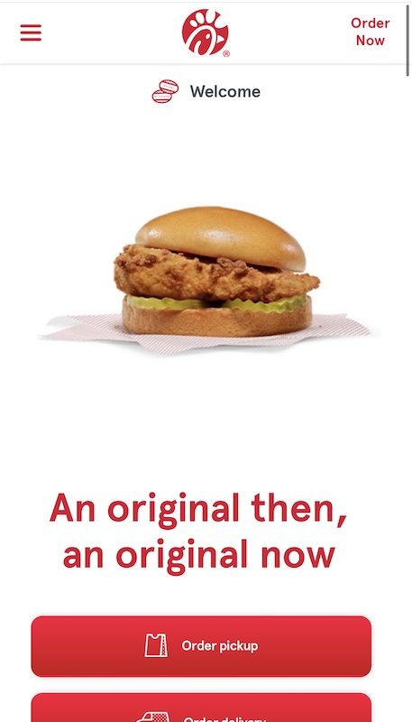
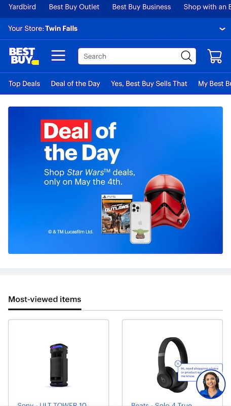

Visual Hierarchy
Carmax
https://www.carmax.comCarmax's website shows a good use of visual hierachy. The way the site is designed, the designers know that most people would want to search for the car that they are looking to find. The search box is on the topof ther webpage. They have links on the bottom of the page for things that people would commonly use, There are 3 ways that someone can search for a car. The search bar, the search car button and the shop button on the bottom nav bar.
White Space and Clean Design
Chic-fil-a
https://www.chic-fil-a.com
The website for Chic-Fil-a shows a great exmaple of a clean design and use of white space. Thier company color is red and white so they did not have to have many colors fullingh their site. The use of no color helps make the brand's website more regionizable to everyone. The clean design of the site also allows the focus to be on the picutre of the chicken sandwich and the 2 red buttons for the order options.
Rules of Thirds
Best Buy
https://www.bestbuy.com
Best Buy's website show a great use of the rule of thirds. The first 3 items on the web page shows things that the deisigner thinks people would want to go to. The top box would rotate between several images that would tell the consumer what deals are happening on their site and in stores. The smaller 2 boxes shows items that other people have views on the Best Buy site. The site is super easy to navigate. I felt that they designed the site to hopefully get people to hit the Deals box and then the most view items section.